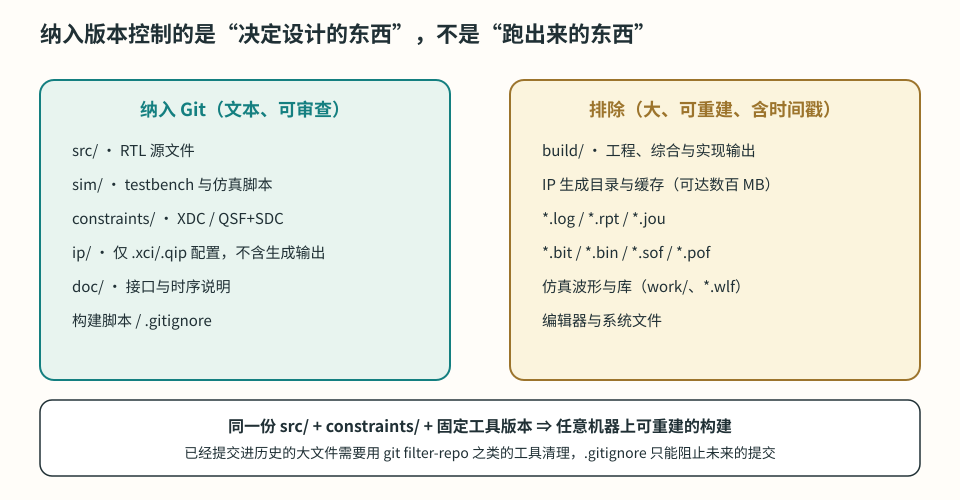

工程目录与版本管理：让设计可被重建
FPGA 工程对工具版本、IP 版本和器件约束高度敏感。把“决定设计的东西”和“跑出来的东西”分开管理，是让任何人在任何机器上重建结果的前提。
01 / 为什么 FPGA 工程更依赖规范？
软件工程里，一个能编译通过的仓库往往几个月后还能编译。FPGA 工程却不是：同一份 RTL，换个工具版本或换个 IP 版本，综合与实现结果就可能不同；一片板子的修订版改了一根引脚，约束文件就得跟着改。
这带来几个与软件工程不同的压力：
- 工具版本敏感。 不同版本的工具对同一语言子集、原语与 IP 的处理可能不同，工程文件格式也可能不兼容。
- IP 版本锁定。 同一个 IP 核的不同版本可能生成不同的 RTL 与网表，两个人用不同版本时，结果不可比。
- 大量二进制与大文件。 比特流、配置存储器镜像、实现报告、IP 生成缓存都很占空间，而且大多可以重建。
- 硬件依赖。 同一段 RTL 在不同器件或不同板卡修订上，需要不同的约束。
这些问题的共同目标是四个字：可复现性——在另一台机器上、用声明的工具版本，能重新得到同一份结果。
02 / 目录结构：源文件与生成产物分离
目录结构不需要很复杂，但必须体现一条原则：能被人工审查的文本（源文件、约束、脚本）与工具生成的产物分开存放。一个可用的最小布局如下：
my_fpga_project/
├── src/ # RTL 源文件（按模块组织，不平铺）
├── sim/ # testbench 与仿真脚本
├── constraints/ # 约束：XDC（Vivado）/ QSF+SDC（Quartus）
├── ip/ # 仅提交 IP 配置文件（.xci/.qip），不提交生成输出
├── doc/ # 接口说明、时序图、板卡手册摘录
├── build/ # 构建输出（不进 Git）
└── .gitignore两条关键分离：源文件与生成产物分离（src/ 与 build/），源文件与约束分离（src/ 与 constraints/）。这样即使更换工具版本、重新生成 IP，RTL 与约束仍然是干净且可审查的。

03 / .gitignore：什么不该进版本控制
把生成产物排除在外，靠的是 .gitignore。下面是一份覆盖 Vivado 与 Quartus 常见生成物的模板（具体工具版本会带来差异，应以实际产出的目录/后缀为准）：
# 构建输出（可重建）
build/
*.runs/
*.cache/
output_files/
db/
incremental_db/
# IP 生成缓存（体积大，可重建；但 IP 配置本身如 .xci/.qip 应提交）
.ip_user_files/
.ip_cache/
.srcs/
*.hw/
*.sim/
# 日志与报告
*.log
*.jou
*.rpt
*.summary
# 比特流与配置镜像
*.bit
*.bin
*.mcs
*.sof
*.pof
# 仿真库与波形
work/
*.wlf
*.vcd
# 系统与编辑器文件
.DS_Store
.vscode/
.idea/.xpr/.qpf）是否纳入控制需要权衡：它们便于双击打开，但往往包含绝对路径与版本信息。采用非工程模式（源码 + 约束 + 脚本，见第 15 章）能避开这个问题，代价是需要在命令行重建工程。04 / 已经提交的大文件怎么办？
.gitignore 只影响以后的提交；它不会把已经写进历史的大文件删除。如果仓库因为误提交的比特流或 IP 缓存而变得臃肿，需要重写历史来清理。常用工具是 git filter-repo，也可用 BFG Repo-Cleaner。
预防比清理便宜得多。一个实际可行的做法是：在初始化仓库时就把 .gitignore 写好，并在提交前用 git status 确认没有意外的二进制文件被加入。对于必须保存的大文件的发行产物（如发布的比特流），应放在发行版或对象存储里，而不是普通仓库中。
除了大文件，另一个需要版本控制思路的地方是“构建的可追踪性”：把顶层源文件、约束、工具版本，以及关键报告（时序总结、利用率）一并记录。这样出问题时可以回到某个具体提交重建，而不是靠记忆。
05 / 命名与协作约定
命名不是审美问题，而是让代码可被快速理解的前提。下面是一套常见且不自相矛盾的约定，团队内部保持一致比“选哪一套”更重要：
| 对象 | 约定 | 示例 |
|---|---|---|
| 信号 | 小写蛇形 | data_valid、fifo_empty |
| 参数/常量 | 大写 | DATA_WIDTH、CLK_PERIOD |
| 模块名 | 小写加下划线，与文件名一致 | uart_tx、spi_master |
| 时钟 | 前缀 clk_ | clk_100m |
| 低有效复位 | 后缀 _n | rst_n |
此外，至少应约定：每个顶层模块头部写明功能、端口说明与修订记录；状态机的编码方式（二进制/格雷/独热）在注释中说明；同一个寄存器只在单个 always 块中被赋值。这些约定都可以用 lint 工具或代码风格检查在提交前自动验证。
--lint-only（或多个工具的组合）可以在提交前对可综合子集做语法与常见设计错误检查，比某些综合器的警告更严格。把它接进预提交钩子或 CI，能提前拦住大量低级错误。06 / 可复现性检查表
把本章落到可执行的动作上，一个工程至少要满足：
- 源文件、约束、IP 配置均在版本控制中，且可从零构建。
- 构建产物、生成缓存与比特流不在版本控制中（且有
.gitignore防护）。 - 构建所需的工具版本与命令在仓库内可查（如 README 或脚本）。
- 顶层源文件、器件 part 与约束文件名固定，不依赖开发者本地路径。
- 关键报告（时序总结、利用率）可随提交保存。
满足这五条，另一个人拿到仓库后才能重建同一份设计。缺任何一条，“我这里能跑”就无法变成可复核的结论。
思考练习：为什么“把整个工程目录压缩后传给同事”不算可复现？
因为它没有记录“哪些文件是源头、哪个工具版本、用了什么命令”。接收方得到的是结果快照，而不是能从源文件重建的流程；一旦需要修改或排查，仍然无法确定哪些变动会影响综合与实现。